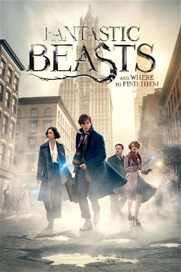

Fantastic Beasts and Where to Find Them (2016)
AdventureFantasy
| Year | 2016 |
|---|---|
| Rating | US:PG-13 / US:Rated PG-13 |
| Genre | Adventure, Fantasy |
In 1926, Newt Scamander arrives at the Magical Congress of the United States of America with a magically expanded briefcase, which houses a number of dangerous creatures and their habitats. When the creatures escape from the briefcase, it sends the American wizarding authorities after Newt, and threatens to strain even further the state of magical and non-magical relations.